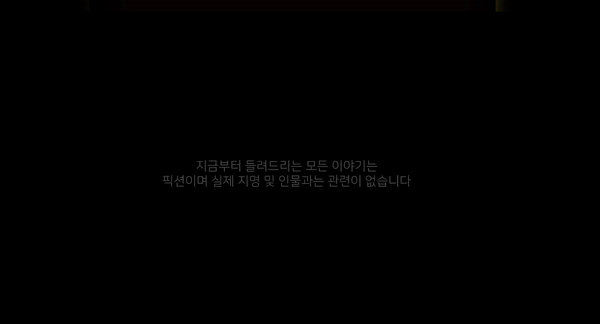
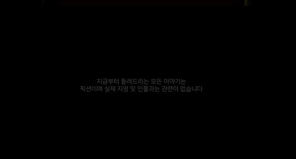

03 : Timeline
202X년 6월 29일, 홈코노미?
코로나바이러스가 창궐한 지 벌써 X년 째, 치료제가 개발된 이후에도 새로운 변종이 급속하게 퍼지면서 사람들의 삶을 방해해왔다.
사람들은 몇년 간 계속되는 전염병에 질려버렸다.
사람들은 모두 재택에서 학습과 근무를 수행하고 필수적인 상황에만 밖으로 나가는 삶을 지속하면서 텅 빈 바깥은 쓰레기와 배달 로봇, 정찰 드론 외에는 보이지 않았다.
이른바 포스트 코로나 시대가 시작된 것이다.
재택 근무가 불가능한 직종의 사람들은 직업을 잃고 국가에서 주는 재해 지원금으로 하루하루를 버티고 있었고, 오프라인 쇼핑은 사라진 지 오래되었다. 수천만 명의 사람들이 온라인으로 돈을 벌기위해 웹페이지를 만들거나 홍보용 동영상을 만들었다.
가내 수공업이 가능한 사람들은 생산 활동을 계속할 수 있었지만, 나는 그런 장비와 재료를 마련할 만한 돈이 없었다. 하지만 얼마 전 희망적인 메일을 받았다. 바로 내가 다녔던 가톨릭대학교 메이커스페이스가 재학생을 위해 제한적으로 생산을 돕는 프로그램을 운영한다는 것이었다. 하지만 이 모든 혜택을 모두 비대면으로 제공하며, 한정된 횟수로만 메이커스페이스를 방문할 수 있다고 했다.
이 프로그램과 공간을 통해서 집에서 생활하는 사람들을 위한 수익성 있는 나만의 홈코노미 제품을 만들어볼까?
 

202X년 7월 20일, 오리엔테이션
오늘은 드디어 포스트 코로나 프로그램의 첫 날이다.
홈코노미에 관심이 있는 팀원을 모아 아이디어함께 수 많은 경쟁자를 제치고 참여 자격을 얻게 되었다. 몇일 뒤, 우리는 온라인으로 첫 오리엔테이션을 진행했다. 2시 정각에 사람들이 모이고 화면에서 담당자가 가면과 함께 음성을 변조한 채로 나타났다."팀원들과는 만나선 안되며, 제작에 필요한 제품을 메이커스페이스에 구비해 두었으니 미리 방문을 예약하고 방문해야 합니다. 2주간의 시간동안 여러분의 아이디어를 구현할 수 있는 교육과 멘토링도 제공합니다. 우승자에게는 상금이 부여되니 행운을 빌겠습니다."
택배를 통해서도 포스트코로나 시대에 필요한 생존 키트를 받았다. 마스크 걸이, 아두이노 부품, 지칠때 먹을 수 있는 비상식량까지! 이거면 2주동안 힘을 내서 제품을 만들어낼 수 있다! 또한 아직 감염되지 않은 물류 센터를 통해서 제작에 필요한 재료를 팀 별로 따로 구매할 수 있다고 한다.
나에게 주어진 지원을 최대한 활용해서 멋진 시제품을 만들것이다. 앞으로의 교육과 제작이 기대된다.
202X년 7월 21일, 레이저커터
오늘은 온라인으로 제공되는 첫 번째 교육 날이었다. 늦지 않게 온라인 대화방에 접속하고 수업을 기다리고 있는데, 갑자기 통신이 끊기게 되었다!
"여러분 죄송합니다. 센터 전체의 인터넷망이 갑자기 끊겼습니다. 연결이 원활해질때까지 잠시만 기다려주세요."
원격으로나마 센터에 있는 장비를 구경하고 싶었는데... 온라인으로 만나다보니 이런 일도 생길 수 있구나 하는 생각이 들었다. 수업 후 우리는 선생님의 녹화된 동영상을 들을 수 있었다. 내일은 꼭 실시간으로 만날 수 있기를!

202X년 7월 22일, 3D 프린터
어제의 레이저커터 수업에 이어 CUK Makerspace에 있는 3D프린터 장비 교육을 듣는 날이다. 소량으로 다품종 생산이 가능한 기계라 포스트 코로나 시대에 많은 사람들이 구입하여 제품 제작에 이용한다고 한다.
장비를 활용한 수업이라 화면 상으로 어떻게 배울 수 있을 지 궁금했는데 카메라를 통한 자세한 촬영으로 마치 현장에 있는 것처럼 사용방법을 익힐 수 있었다.
추가로 수업이 끝난 뒤 올라오는 유튜브 강의 링크를 보며 팀원들과 어떤 것을 구현할 수 있는 지 배우고 다시 구현해볼 수 있었다.
202X년 7월 23일, HTML&CSS 교육(1/3)
오늘은 장비가 아닌 웹페이지 제작 교육을 온라인으로 받는 날이다. 포스트코로나 시대에서는 제품을 멋지게 만드는 것도 중요하지만 전세계에 있는 사람들에게 비대면으로 내 물건을 멋지게 홍보하는 것도 굉장히 중요한 요소라고 한다.
나처럼 프로그래밍이 아예 처음인 사람이 수업을 따라갈 수 있을까 걱정이 많았지만 친구들이 채팅으로 대답해주는 내용과 질문하는 내용을 보고 쉽게 이해할 수 있었다. 내가 쓴 글이 웹페이지에 나오다니! 새롭고 신기한 기술을 하나 더 배우게 되는 것 같아 보람찬 첫 수업이었다.
202X년 7월 24일, HTML&CSS 교육(2/3)
어제는 간단한 프로그램 세팅 방법과 사용 방법에 대해 배웠는데 오늘은 드디어 HTML을 이용한 다양한 콘텐츠 삽입 방법에 대해서 배워보았다. 사용자들이 편하고 쉽게 제춤 내용을 이해하기 위한 다양한 요소를 삽입해보았다. 팀원들과 만들고 싶은 웹페이지의 구성에 대해서도 자세하게 이야기 할 수 있을 것 같다!
교육을 들을 때마다 드레스코드를 정한 뒤 참가하는데, 오늘의 주제는 블랙이었다. 검은 옷과 배경으로 멋지게 꾸민 친구들과 함께해서 오프라인 교육만큼 생동감 있고 재밌는 수업이었다 :)
202X년 7월 27일, HTML&CSS 교육(3/3)
오늘은 웹페이지 제작 수업의 마지막 날이다. 페이지의 콘텐츠를 더욱 멋있게 만들어 주는 CSS 요소에 대해 배우고 사용하니 어느정도 멋진 페이지를 만들 수 있겠다는 자신감이 생겼다. 팀원들과도 넣고 싶은 다양한 요소에 대해서 회의해볼 수 있을 것 같다.
친구들과 함께하는 마지막 수업이라 후련하기도 하고 섭섭하기도 했지만 이제 곧 시제품 제작에 온 힘을 쏟아야 하니 더욱 열심히 끝까지 참여해야겠다. 내일부터는 메이커스페이스에 방문해서 장비를 직접 사용해 볼 것이다.
202X년 7월 28~30일, 팀 별 온라인 멘토링
시제품과 웹페이지를 제작하는 동안 두 번의 멘토링을 받을 수 있는 기회가 주어졌다. 수업을 들으면서 미처 하지못한 질문들과 제작 중 고민이 되는 사항들을 정리해두고, 멘토링 회의실이 열리길 기다렸다.
아두이노/메이커 멘토링
먼저 1시간 가량 시제품 제작에 대한 멘토링을 받게 되었다. 처음 생각했던 시제품의 외관에서 막상 구현하기 힘든 부분에 대한 고민을 말씀 드렸는데 현실적으로 개선할 수 있는 방안을 잘 정리해 주셨다. 그리고 미처 생각하지 못했던 재료에 대한 부분이나 제품의 검증 방법에 대한 내용도 상세하게 설명해주셔서 큰 도움이 되었다.
시제품에 추가로 결합할 수 있는 아이디어를 먼저 생각해주시고 아두이노 활용과 관련된 어려운 내용도 좋은 해결 방법을 제시 받아서 알찬 멘토링이 되었던 것 같다.
웹페이지 제작 멘토링
그 다음엔 웹페이지 제작에 대한 멘토링을 받게 되었다. 수업에서 배우지는 않았지만 구현하고 싶은 기능에 대해서 여쭤보니 오픈소스에 대한 여러가지 대안을 주셨고, 참고할 수 있는 링크도 받아보았다. 넣고 싶은 내용이 많아 글과 영상을 잔뜩 넣어두었는데 멘토님이 검토 후 빼야 할 부분이나 추가로 강조해야 할 부분에 대해서도 짚어주셨다.
마감일에 쫓겨 놓칠법한 맞춤법, 저작권에 관련된 내용도 짚어주셔서 팀원별로 마감 전에 체크해야 할 사항을 명확하게 나눌 수 있었다.
202X년 7월 31일, 대망의 시제품 발표
오늘은 대망의 발표 날이다. 포스트코로나 시대에 맞춰 사람들이 사용할 수 있는 새로운 아이디어를 생각하고, 이를 2주동안 정말 정신없이 구현했다. 팀원들과 온라인으로 새벽까지 회의를 하기도 하고, 메이커스페이스 장비와도 몇 시간 동안 씨름하며 제품을 만들고 나니 아쉬운 부분도 있었지만 뿌듯함이 가장 컸다.
과연 오늘의 발표는 어떻게 진행될까? (업데이트 예정)